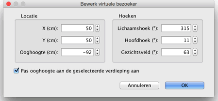
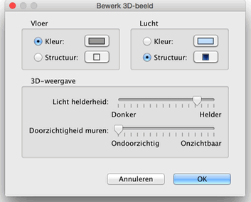

| 3D-beeld bewerken | |||
Kies 3D-beeld > Overzicht of 3D-beeld > Virtueel bezoek om tussen de twee gezichtspunten te schakelen die in 3D-beeld mogelijk zijn.
Wanneer Overzicht geselecteerd is, wordt je huis in 3 dimensies getoond, vanuit een hoog gezichtspunt gezien. Wanneer je in deze modus de muis naar links of rechts beweegt terwijl je de linker muisknop ingedrukt houdt, draait het huis om een een verticale as in het midden van het huis; de muis naar voren of naar achteren bewegen terwijl je de linker muisknop ingedrukt houdt, laat het draaien om een horizontale as; met scrollen zoom je in of uit.
Wanneer Virtueel bezoek geselecteerd is, wordt gelijktijdig een virtuele bezoeker, bezien van bovenaf, in de plattegrond getekend. Zijn locatie en hoek verandert gelijktijdig in de plattegrond en het 3D-beeld bij iedere beweging. Deze bezoeker is omringd door vier indicatoren.
|


|
Wanneer de muisaanwijzer op een van de schouders of de rug van de bezoeker geplaatst wordt, wijzigt het zodat duidelijk is dat je dit punt kunt slepen om zo de hoofdhoek, de lichaamshoek of de ooghoogte te wijzigen.
Wanneer je de muisknop indrukt, wordt een ballontip zichtbaar die de bewerkte waarde laat zien.  In dit paneel kun je ook het gezichtsveld wijzigen van de virtuele bezoeker en of de ooghoogte aangepast moet worden aan de verdieping waar de bezoeker zich bevindt, waarmee de virtuele bezoeker naar boven of beneden kan naar de geselecteerde verdieping.. Ten slotte laat het 3D-beeld > Bewerk 3D-beeld een 3D-beeld paneel zien waarin je de kleur of de structuur van de vloer en de lucht, de lichtsterkte en de muur- (en vloer-)transparantie kunt instellen.  |
|